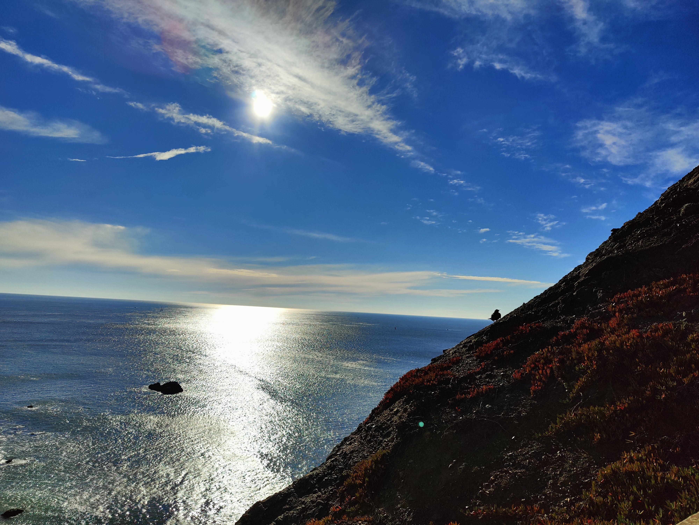
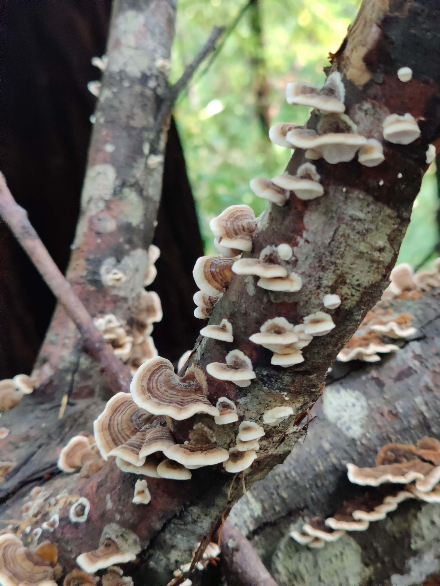
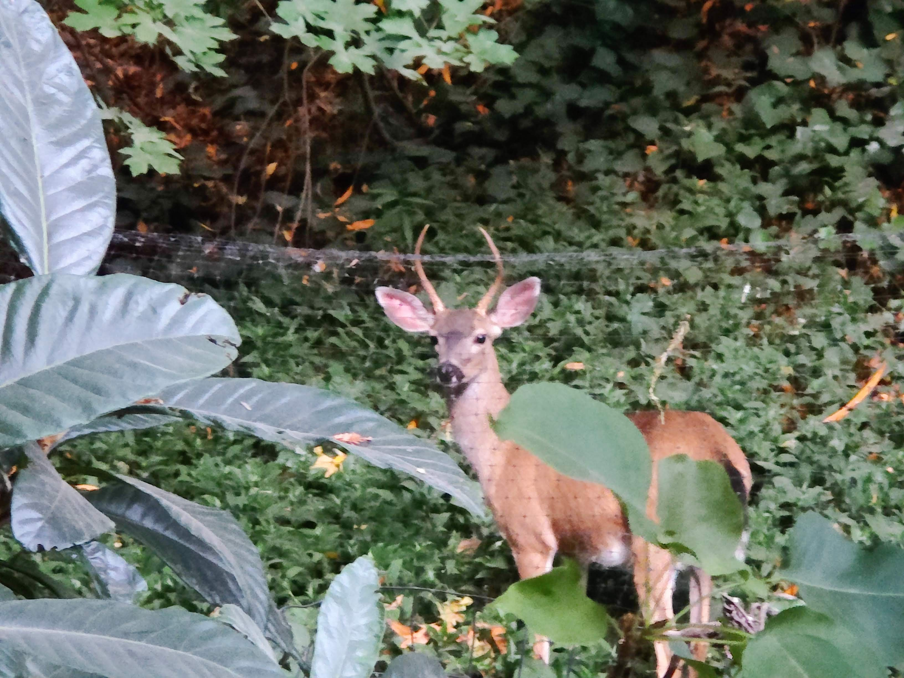

Photo Gallery


Celebrating my first publication in 2009 with Dr. Rafael Vazquez's lab |
 View from the San Francisco Bay |
 Fungus Trametes from my backyard |
|
Tidepooling in Fort Bragg, CA. |
Floating in the Russian River |
With Luis Morales, celebrating the 2024 Hispanic Heritage Month at the Bodega Marine Laboratory |
|
Dwarf Teddy bear sunflower from our 2025 garden. |

One of our regular visitors to our garden in 2024. |
One of the eggs laid by Naty, our turkey, aka, the Queen of the Coop. |